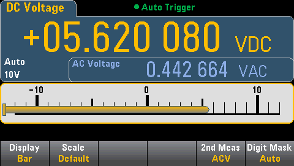

The Display and Digit Mask softkeys behave as they do in the Number display.

The Scale softkey specifies the horizontal scale:
- Default sets the scale to equal the measurement range.
- Manual allows you to configure the scale either as High and Low values or as a Span around a Center value. For example, a scale that goes from a Low of -500 Ω to a High of 1000 Ω could also be specified as a Center of 250 Ω with a Span of 1500 Ω.
Selecting a Secondary Measurement
Press 2nd Meas to select and display a secondary measurement. For example, for the DCV measurement function, you can select ACV, Peak, or Pre-Math as the secondary measurement function. With ACV selected as secondary, the display shows the DCV measurement as a number near to top of the display, DCV in the bar meter, and the ACV measurement above the bar meter:

Refer to Secondary Measurements for more information on secondary measurements available for each measurement function.